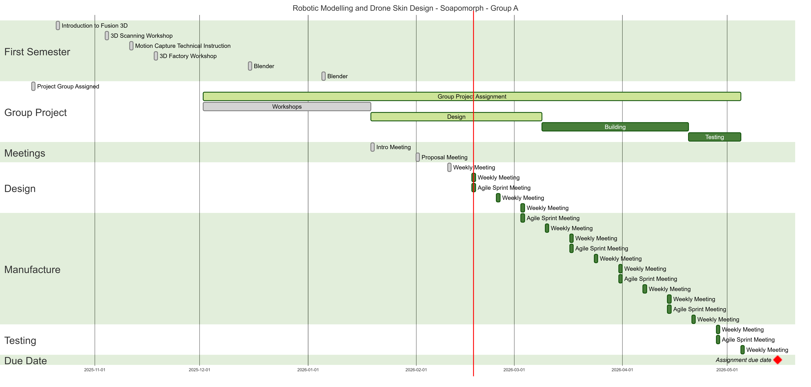
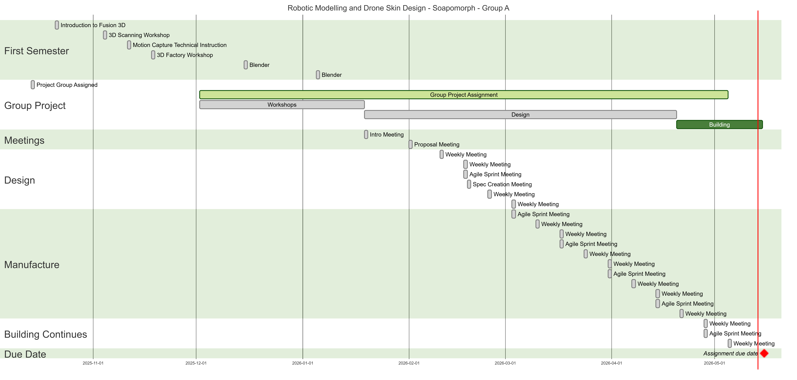

Project Management
Each member of the group split to complete their dedicated role within the project. There was then meetings where the group would come together and discuss every section. This can be demonstrated on the Gannt chart. Multiple Gannt charts were made. This consists of the original time plan which is displayed on the original Gannt chart. But then an updated Gannt chart. Due to some printing errors and other unforeseen circumstances, many of the phases were delayed and a final prototype was never completed.

